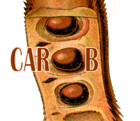
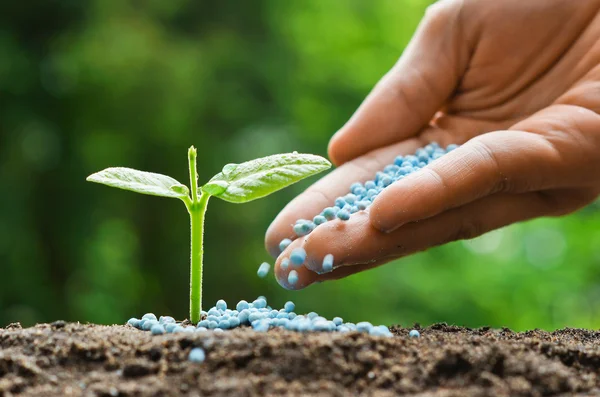

Swapped my field boots for coding boots two years ago, diving headfirst into the thrilling world of data analytics. Since then, I've eagerly embraced the role of a perpetual learner in this journey, wrangling messy agricultural research data from experiments and surveys into a neat and tidy format using R and Python. And to keep myself balanced, I find joy in dancing, a passion that adds a little rhythm to my life.

I've made contributions by developing scripts and assisting in the creation of functions that streamline the process of data standardization in Carob. The Carob project creates reproducible workflows for standardizing agricultural research data and aggregating datasets for further analysis, achieved through custom R scripts

This analysis was done using data that has been collated in Carob. It looked at the response of soybean, maize and groundnut to different fertilizer regimes in select countries in East, West and Southern Africa.